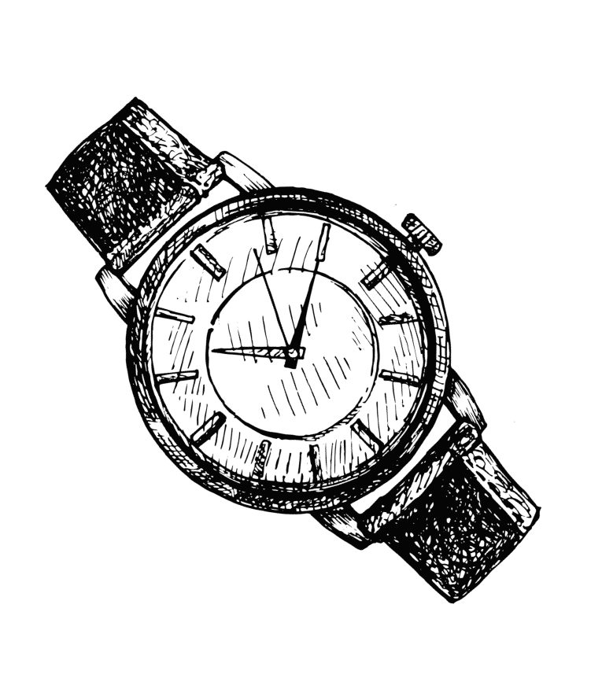

整理好
你的一天

独立通常是追求和开展自由职业者最引人注目的因素。除了与客户会面的期望之外，你还可以自由地组织自己的一天。
不要仅仅按照别人的建议（常规 朝9晚5 的时间表），自由职业就是你思考自己最有效的机会。
事实证明，人们分为三种类型：早上类型人，夜猫型人和下午类型人。 考虑到这一点，请考虑如何有目的地设计最有效的一天。
你一整天可以做的事情可以优化你的工作方式:
开始你的一天
通过发现从可以尽早完成的事情开始新的一天，你会更有动力在此后解决更复杂的事情。
养成习惯
专注于时间和工作，以始终如一地保持你的注意力，随着时间的推移会不断改进。
设定目标
创建你今天要完成的项目的清单，并与自己达成协议，以完成该清单。 如果不能，问问自己为什么。
排除干扰因素
将手机放到触不可及的地方，暂停这些通知，关闭这300个浏览器选项卡，然后集中精力完成大量工作。
整理好（工作）空间
如果你是在家工作，请保持空间整洁，简洁和井井有条。 拥有一个专用的空间是个不错的选择，它不会让你的环境分散你的注意力。